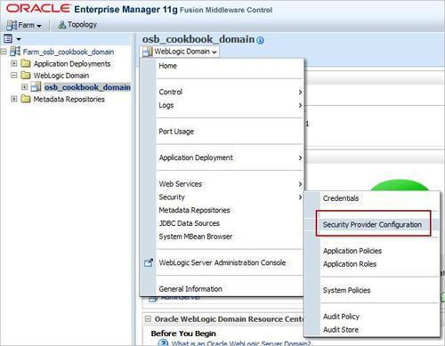
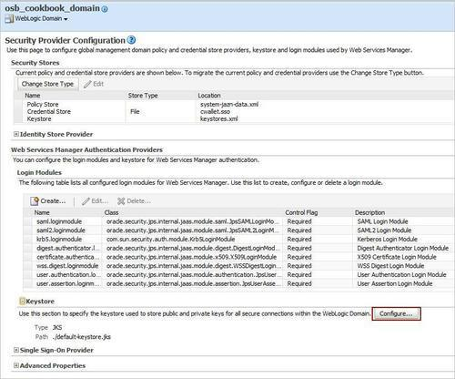
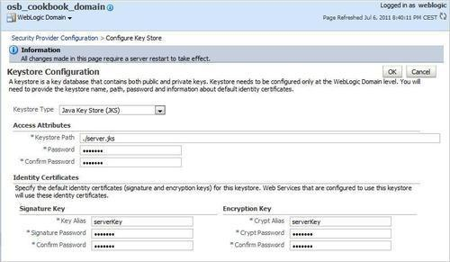
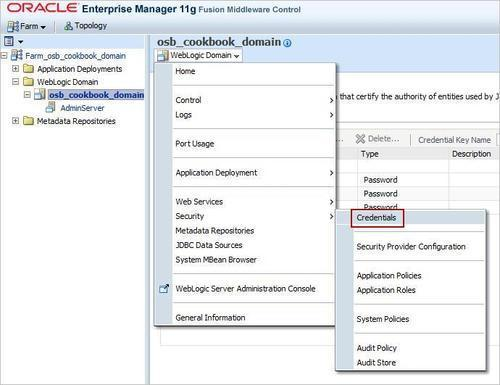
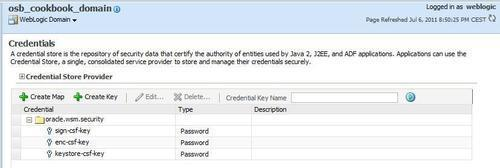
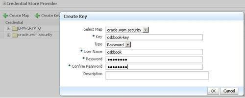

After installing the OWSM component to our WebLogic domain, we will be configuring the OSB server for OWSM. For this, we need to generate a custom Java keystore which contains the server certificates and configure it in Enterprise Manager (EM).
First, let's create a Java keystore which will be used by OWSM. On the command line, perform the following steps:
bin folder of the JDK used by the OSB:cd c:\[FMWHome]\jrockit-jdk1.6.0_20-R28.1\bin
keytool -genkey -alias serverKey -keyalg "RSA" -sigalg
"SHA1withRSA" -dname "CN=server, C=US"
-keypass welcome -keystore c:\server.jks -storepass welcome
server.jks located at c:\ to the config\fmwconfig folder of the OSB domain:cd ..\..
cd user_projects\domains\osb_cookbook_domain\config\fmwconfig
copy c:\server.jks .
Next, we have to import the Java keystore into Enterprise Manager. Open Enterprise Manager in a browser window (http://localhost:7001/em) and perform the following steps:


./server.jks into the Keystore Path field. welcome into the Password and Confirm Password field. serverKey into the Key Alias field in the Signature Key section. welcome into the Signature Password and Confirm Password field. serverKey into the Crypt Alias field in the Encryption Key section. welcome into the Crypt Password and Confirm Password field.
We have successfully created a Java keystore and configured it for our OSB domain.
Now, let's create a user we will use for the authentication later. In the Service Bus console, perform the following steps:
osbbook into the User Name field and welcome1 into the New Password and Confirm Password fields.Adding a new user through the Service Bus console can be done outside a change session.
Next we need to add the osbbook user to the domain credential store. A credential store is a repository of security data. The credential is used later by the Service Bus test console in order to look up the username and password. In Enterprise Manager, perform the following steps to add a credential to the credential store:


osbbook-key into the Key field osbbook into the User Name field and welcome1 into the Password and Confirm Password field.
We have now set up the OSB server to work with OWSM and also created and configured the osbbook user which we will use later.
In this recipe, we created a Java keystore and this keystore contains a self-signed Server Key which will be used by OWSM. For production it is better to use a certificate which is signed by a known Certificate Authority (CA). The Server Key consists of two parts: the private key part will be used by the receiver to decrypt the incoming messages and to sign the messages and the public key part is used by the sender to encrypt the message and to check the signature.
Enterprise Manager uses the Credential Store Framework (CSF) to store the credentials, such as username/password combinations, tickets, and public key certificates. The configuration of the CSF is maintained in the jps-config.xml file in the domain folder.
A credential can also be created from the command line using Web Logic Scripting Toolkit (WLST). In a command window, perform the following steps:
wlst.cmd located in the [FMWHome]\oracle_common\common\bin folder.connect('weblogic','welcome1','t3://localhost:7001')
createCred(map="oracle.wsm.security", key="osbbook-key", user="osbbook", password="welcome1",desc="osbbook-key")
disconnect()
exit()